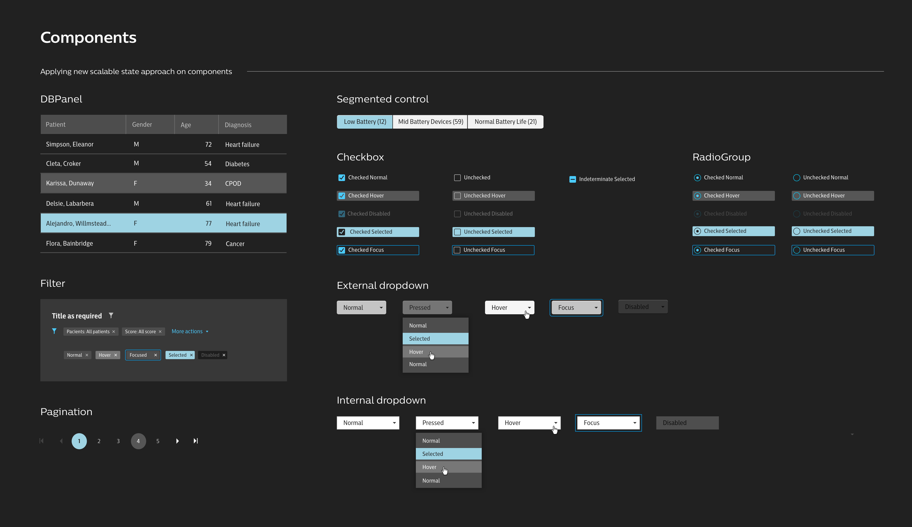
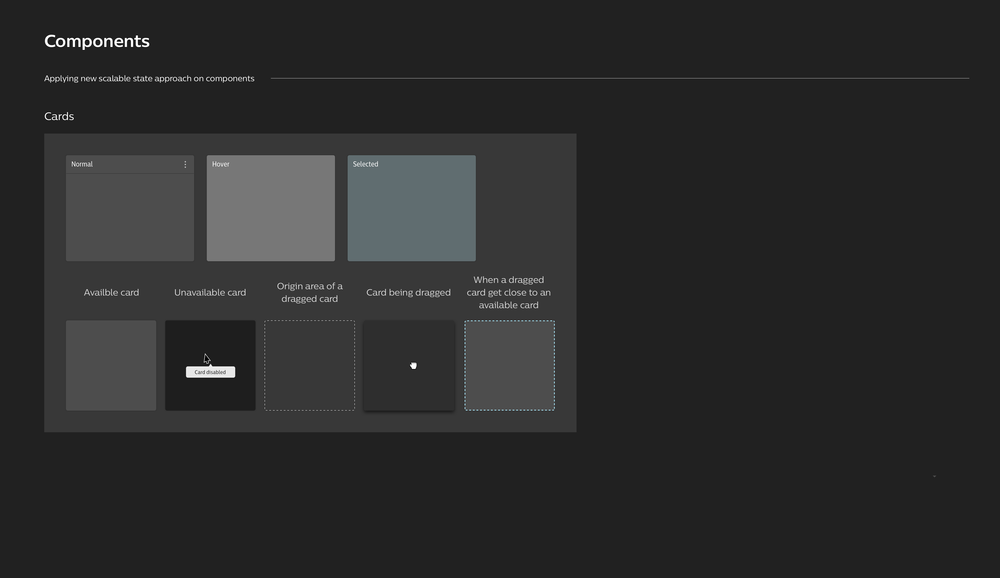
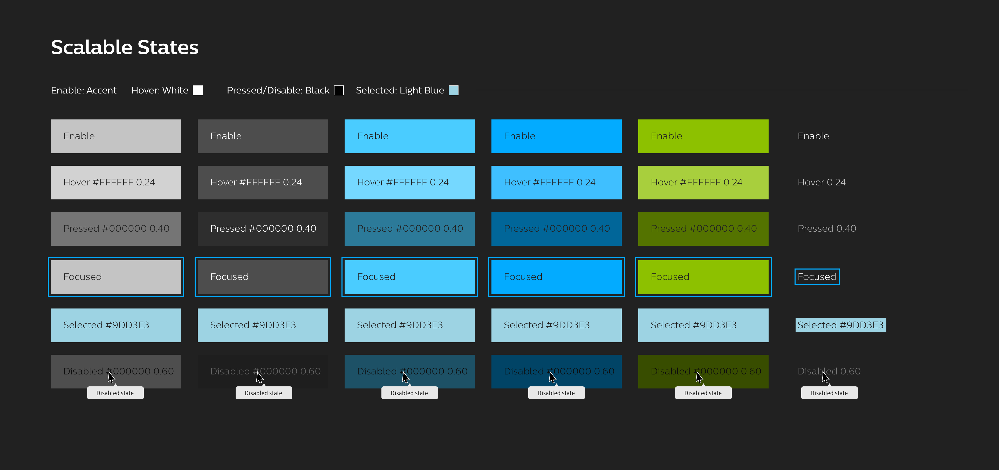
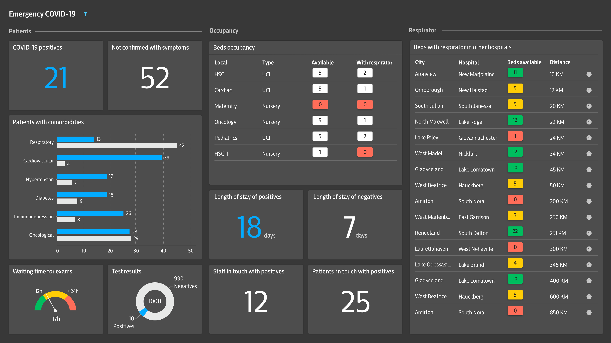
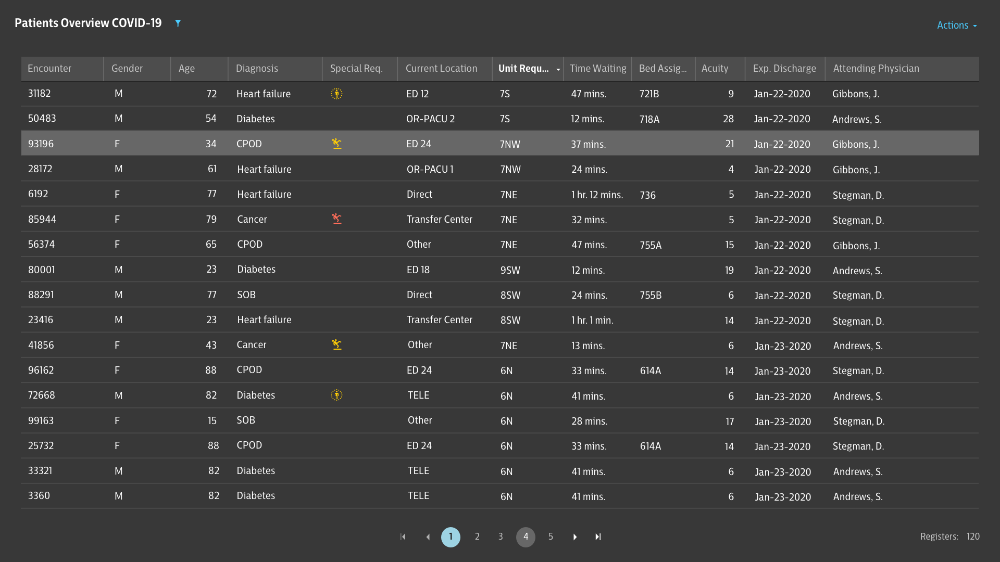
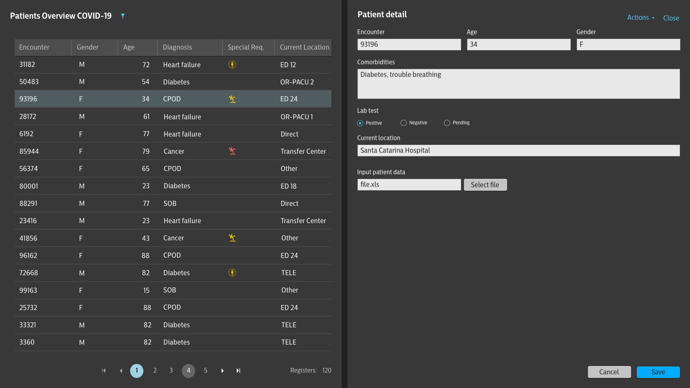
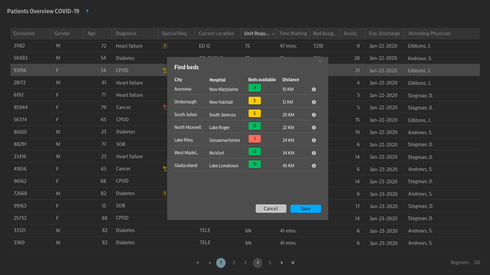
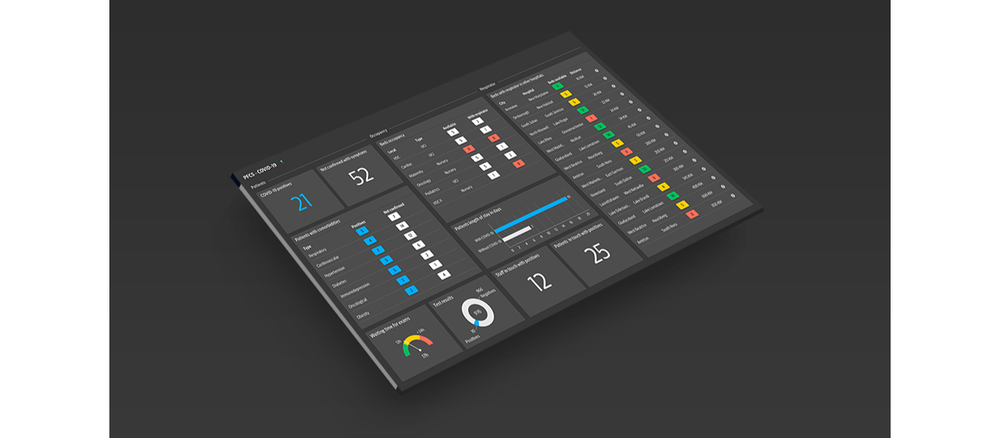
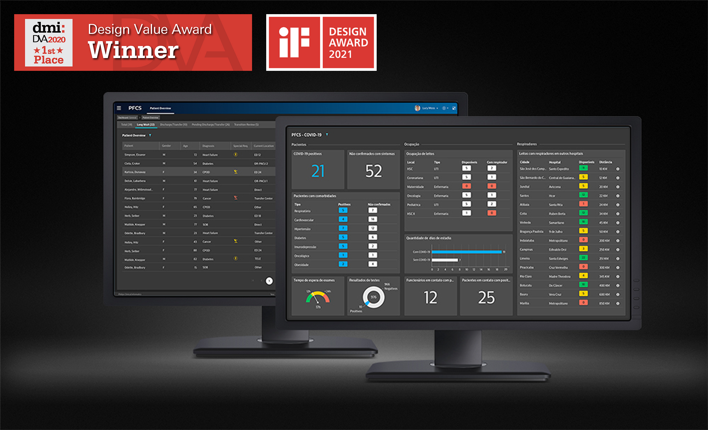

COVID-19 Dashboard
Healthcare project delivered at Philips.

The Challenge
At the height of the COVID-19 pandemic, hospitals across the world were overwhelmed. Clinical teams struggled to track patient flow, anticipate resource shortages, and coordinate across facilities — all in real time. The question we set out to answer was: how do you give hospitals a clear, shared picture of an invisible crisis?
The goal was to build a cloud-based collaborative platform that would allow hospitals to monitor patients with suspected or confirmed COVID-19 diagnoses, and collectively manage critical resources — from available beds to ventilators — across the entire healthcare network.
My Role
- Collaborated with stakeholders across clinical, product, and engineering teams to map and prioritise user requirements
- Produced low- and high-fidelity prototypes to communicate and validate design decisions
- Presented design solutions to senior stakeholders and iterated based on clinical feedback
- Facilitated cross-functional communication between design, development, and business teams

The most pressing constraint was time. We had eight weeks to deliver a feasible, viable, and clinically meaningful solution from scratch. That required tight collaboration across five specialist teams: Design, Technology, Development, Product, and Clinical.
Through rapid stakeholder interviews and clinical observation, we identified the key data points hospital staff needed at their fingertips:
- Bed availability and proximity to ventilators
- Patient length of stay
- Symptom tracking and comorbidity data
- ICU vs. general ward occupancy rates
- Contact tracing — staff and patients exposed to confirmed cases
- Positive vs. negative test results and waiting times

To move quickly without sacrificing quality, we mapped the existing components from Philips' Design System and assessed which could be adapted for this context. One of the most impactful early decisions was switching from a light to a dark theme — improving readability in low-light clinical environments such as monitoring rooms and ICUs, where screens need to be legible without disturbing patients.




High-fidelity prototypes were created iteratively and validated at every stage with a mixed clinical team of Philips experts and hospital practitioners. This tight feedback loop ensured the solution stayed grounded in real clinical needs — not just technical assumptions.





This project was about keeping people alive. Hospitals were buckling under the pressure of the pandemic, and the priority was getting a meaningful solution into their hands as fast as possible.
The platform launched within the eight-week deadline and was adopted by several hospitals across Brazil, supporting physicians, nurses, and technicians in making collaborative, real-time operational decisions across clinical pathways.
Value Delivered
• Gave hospital staff a real-time overview of patients with suspected or confirmed COVID-19, reducing the time spent chasing information across disconnected systems.
• Cross-referenced patients with their comorbidities, allowing clinical teams to proactively identify at-risk patients before their condition deteriorated.
• Enabled multi-hospital resource coordination — bed capacity, ventilator availability, and staffing — across the entire healthcare network from a single interface.
• Delivered both dark and light UI variants, adapted to different clinical environments and improving usability in low-light settings without compromising data legibility.
• Raised the accessibility bar for the product by designing an interface that accommodates users with visual disabilities.
Organisational Impact
• Delivered a scalable solution that connected workflows across multiple stakeholder types and customer contexts, while preserving the clinical pathways and design archetypes already established within Philips.
• Demonstrated the value of cross-functional, rapid-iteration design in a high-stakes environment — influencing how future healthcare projects were structured internally.

Social Value
• Enabled faster identification and triaging of COVID-19 patients, ensuring that the most critical resources reached those who needed them most.
• Contributed to reducing mortality by giving clinical staff the data clarity to act quickly and confidently during an unprecedented crisis.
Recognition
• In 2020, this project was awarded 1st Place at the Design Value Awards, recognising its measurable impact on both clinical outcomes and organisational efficiency.
• The following year, it was also selected as a winner of the iF Design Award 2021 in the User Interface category.
